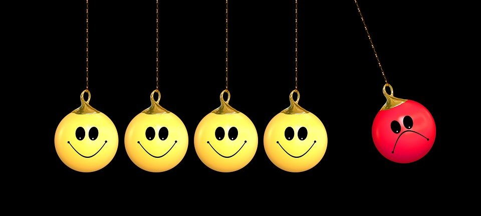
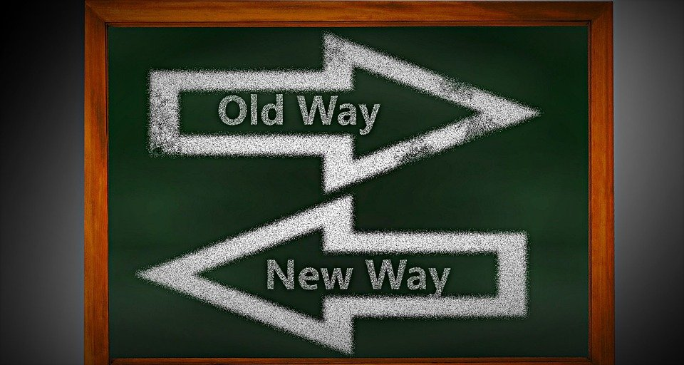
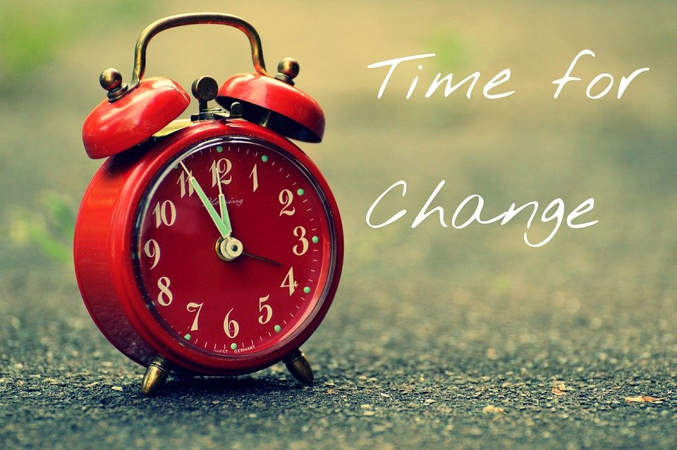

আলোচনাঃনিজেকে পরিবর্তন করার ২৬ টি সঠিক উপায়?
চাইলে তো হুট করে নিজেকে পরিবর্তন করা যায় না তার জন্য অনেক সময়ের প্রয়োজন। ধীরে ধীরে নিজেকে পরিবর্তন করতে হবে ধাপে ধাপে চেলেঞ্জ নিতে হবে। আজকে অনেক বিষয় শেয়ার করবো কি ভাবে নিজেকে পরিবর্তন করা যায়। এই উওর টি বাংলায় কোরা উওর দিয়েছিলাম এইটা খুব কমসময়ে মধ্যে ফিউচার হয় কোরাতে এবং এই উওরটি কোরা সোশ্যাল মিডিয়ায় তে প্রমোট করেছে কোরা কমিউনিটি । এই আর্টিকেলটি অনেক অনেক উপাকার আসবে আশা করি।
রাতে ঘুমাইলাম সকাল উঠলাম তার পর বলবো আমি পরিবর্তন হয়ে গেছি এটা কি আসলে সম্ভব। যদি সত্যি নিজের পরিবর্তন চান তাহলে সবার আগে নিজেকে সময় দিতে হবে।লক্ষ্য করে দেখুন কি কি বিষয়ে উপর আপনি পরিবর্তন চান সে বিষয়টি খাতায় লেখা শুরু করুন। নিজেকে পরিবর্তন করার সঠিক উপায় গুলো কী?

মনে রাখবেন হুট করে নিজেকে পরিবর্তন করা সম্ভব না ধীরে ধীরে নিজেকে পরিবর্তন করতে হয় সময়ের সাথে। আগে আপনি নিজেকে প্রশ্ন করুন আপনি কেন পরিবর্তন চাচ্ছেন আসলে কি আপনার পরিবর্তন প্রয়োজন নাকি কাউকে দেখানোর জন্য নিজেকে পরিবর্তন করতে চাচ্ছেন এটা আগে ভাবুন। যদি ভাবা শেষ হয় তাহলে শুরু করা যাক
নিজেকে পরিবর্তন করার সঠিক উপায় কী?
জীবনে যদি কোন কিছুর পরিবর্তন আনতে চান, তাহলে কাগজ-কলম সাথে রাখুন। কাগজ-কলমে নিজের লক্ষ্য লিখে রাখুন আপনি কি করতে চাচ্ছেন সে মতো আপনি নিজেকে সময় দেওয়া শুরু করুন। প্রথমত ঠান্ডা মাথায় চিন্তা করুন কি পরিবর্তন করতে চান তা নির্ধারণ করুন। আপনার মাঝে কোন ধরণের বাজে অভ্যাস আছে সেগুলোর একটি তালিকা তৈরি করে খাতায় লেখে ফেলুন। তাঁর পর আপনার জীবনের লক্ষ্য ঠিক করে ফেলুন। আগামীতে আপনি নিজেকে কোথায় দেখতে চান তা লিখে ফেলুন খাতায়। আপনি যদি সফলতা পেতে চান এই 3 টি Skills শিখুন এবং নিয়মিত Practice করুন
এরপর আপনার লক্ষ্য অর্জনের জন্য কি কি করতে হবে তা লিখুন। আগমাী ৬ মাস আপনি কি কি করতে যাচ্ছেন। ধাপে ধাপে নিজেকে চ্যালেঞ্জ মুখে ছুঁড়ে দিন ২১ দিনের চ্যালেঞ্জ ,৯০ দিনের চ্যালেঞ্জ, ১৮০ দিনের চ্যালেঞ্জ ইত্যাদি।
এবার আপনার লক্ষ্য নির্ধারন হয়ে গেছে। এই লক্ষ্য পূরনের জন্য আপনাকে সময় দিতে হবে আপনার কাছে আছে ২৪ ঘন্টা এই গুলোকে কাজে লাগতে হবে আপনার লক্ষ্য পৌঁছেনোর জন্য।
নিজেকে পরিবর্তন করার জন্য এগুলো ফলো করুন?

১.সবার আগে সময় অপচয় করা বন্ধ করতে হবে। ২.যদি সোশ্যাল মিডিয়ায়তে আসক্ত হোন এটা থেকে বাহির হতে হবে। আসক্ত ও না হলে সোশ্যাল মিডিয়ায় তে সময় দেওয়া বন্ধ করতে হবে।
ধরুন আপনি প্রতিদিন ৫-৬ ঘন্টা মতো মোবাইল ব্যবহার করেন এটাকে আপনার ছাড়তে হবে প্রয়োজন ছাড়া মোবাইল ব্যবহার করবেন না।
৩.রেগুলার একটা রুটিন তৈরি করুন কখন ঘুম থেকে উঠবেন , কখন খাবার খাবেন একটা রুটিন ফলো করুন।মনে রাখবেন রুটিন যেন পরিবর্তন না হয়।
৪. তাড়াতাড়ি ঘুমাতে হবে ১০.৩০-১১.৩০ P.M সকালে তাড়াতাড়ি উঠতে হবে সকাল ৫.০০-৬.০০ A.M । সকালে মন ফ্রেশ থাকে তাই তাড়াতাড়ি উঠতে হবে আর মজার বিষয় হলো সকালে ঘুম থেকে উঠলে আরও অনেক কিছু উপকারীতা আছে। প্রথম অবস্থায় সকাল সকাল ঘুম থেকে উঠতে পারবেন না। আস্তে আস্তে এটাকে অভ্যাসে পরিনত করতে হবে। সকালে ঘুম থেকে ওঠার পরে কী কী করবেন, তা ঠিক করুন। হালকা ব্যায়াম করতে পারেন। বই পড়তে পারেন ৩০ মিনিট মতো। ১০-১৫ মিনিট হাটতে পারেন।
৫. নিজেকে কেন পরিবর্তন করতে চাচ্ছেন। সেটার উপর কাজ করুন। আপনার গোলের উপর বিশেষ ভাবে কাজ করুন।
৬. প্রতিদিন নিজেকে মোটিভেট করুন, রাতারাতি সফল হবেন না। নিজেকে তৈরি করুন যে চ্যালেঞ্জ নেওয়ার জন্য।
৭. কোন কিছু পরিবর্তন আনতে হলে ২১ দিনের চেলেঞ্জ নিন, তার পর ৯০ দিনের চেলেঞ্জ নিন। মানুষের দৃষ্টিভঙ্গির ভিতরে লুকিয়ে থাকে সফলতা?
৮. নিজের পরিকল্পনা তৈরি করুন, সে পরিকল্পনা নিয়ে কাজ করুন প্রতিদিনের গোল, সপ্তাহের গোল, মাসিক গোল, ছয় মাসের গোল তার পর এক বছরের গোল। এই গোলের ওপর কাজ করুন আগামী ৫ বছরে আপনি লক্ষ কোথায় দাড়াতে চাচ্ছেন সেটা ঠিক করুন।

৯. নিজেকে কারও সাথে তুলনা করবেন না, শুধু এইটুকু নিজেকে বলবেন সবই আমার দ্বারা করা সম্ভব, আমি কেন পারবো না।
১০. দায়িত্ব নিতে শিখুন।
১১. মানুষের সাথে সর্বদা ভালো আচারণ করুন। ভালো ভাবে কথা বলুন।
১২. যখন রেগে যাবেন কাউকে কুটুর কথা বলবেন না, নিজেকে নিয়ন্ত্রণ করুন।
১৩. হাল ছেড়ে দিয়েন না, হতাশ হবে না। নিজেকে সবসময় বলুন আমি এটা করতে পারবো।
১৪.বই পড়ুন প্রতিদিন ১ ঘন্টা করে। রাতে ঘুমানোর আগে ৩০ মিনিট বই পড়ুন। সকালে ঘুম থেকে ওঠে ৩০ মিনিট বই পড়ুন।
১৫. প্রতিদিনের ডাইরি তৈরি করুন, কি করতেছেন সব ডাইরি তে লেখে রাখুন অন্তত প্রতিসপ্তাহে এটাকে এনালাইসিস করুন যাতে এই সপ্তাহে যা করেছেন তা আগামী সপ্তাহে আরও ভালো করতে চেষ্টা করুন।
১৬.সময়ে সাথে চলুন, নিয়তির সাথে বুঝাপড়া করবেন না, যা হয়সে তা হয়সে।
১৭.বাস্তবতা কে মেনে নিন।
১৮. নিজের ইমোশন কে কন্টোল করুন, নিজের ইমোশন কে কন্টোল করতে না পারলে সব শেষ।
১৯. হ্যা বলা বন্ধ করুন, সবসময় হা বলবেন না, না বলতে শিখুন।
২০. প্রতিদিন ৫ ওয়াক্ত নামাজ পড়ুন মুসলিম হলে, আল কুরআন পড়ুন।
২১. ভুল করলে সরি বলুন। রাতে ঘুমানোর আগে ক্ষমা করে দিন যা যা ঘটেছে তা নিয়ে। প্যাসিভ ইনকাম ২০২১ – কিভাবে Passive Income শুরু করা যায়?
২২. অন্যর থেকে বেশি জানুন, কাউকে নিজের সাথে তুলনা করবেন না। সবসময় নিজেকে এটা বলুন I am Best.
২৩. ইউটিউব বেশি সময় অপচয় করবেন না, ইউটিউব ব্যবহার করা ভালো, তবে ইউটিউবে সময় লস করা ভালো না। ফানি ভিডিও দেখবেন না, ইমোশনাল ভিডিও ও দেখবেন না, আপনার কাজ রিলেটেড ভিডিও দেখুন।
২৪. নিজের গল্প নিজে তৈরি করুন, অন্যর গল্প থেকে শুধু শিক্ষা গ্রহণ করুন, আমি বলবো যারা অসফল তাদের সাথে কথা বলতে কারণ তারা কেন অসফল তাদের থেকে শিক্ষা নিয়ে নিজের জীবনে কাজে লাগান। কখনো হাল ছাড়বেন না।

২৫. নতুন নতুন কিছু শিখতে চেষ্টা করুন। Never Stop Learning. প্রতিদিন নিজের শেখার পরিবেশে তৈরি করুন।নিজের ভুল থেকে শেখার চেষ্টা করুন।
২৬. ভালো কাজের জন্য উৎসাহ দিন অন্য কে।
নিজেকে আপডেট করার উপায়? নিজেকে আপডেট করার জন্য আপনাকে প্রচুর পড়াশুনা করতে হবে পড়াশুনার মাধ্যমে নিজেকে শক্তিশালী করা যায় নিজের দুর্বলতা উন্নতি করার যায়। নিজেকে আপডেট করারপ্রথম শর্ত হলো পড়াশুনা করা ।
নিজেকে নিয়ন্ত্রণ করার উপায়? নিজের মন কে নিয়ন্ত্রণ করা সবচেয়ে কষ্টকর মানসিক চাপ, কাজের চাপ, সম্পর্কের চড়াই-উতরাই ইত্যাদি কখনো কখনো মনকে বিক্ষিপ্ত করে দেয়।ব্যায়াম করুনঃ ব্যায়াম নিজের মনকে শান্ত করে ব্যায়ামের মাধ্যামে নিজেকে নিয়ন্ত্রণ করে নিন নিজেকে তরতাজা করে নিন।
আবেগ নিয়ন্ত্রণ করার উপায়? আবেগ এক ধরনের অনুভূতি। এর মধ্যে আছে ভালোবাসা, ঘৃণা, সুখ, দুঃখ, দুশ্চিন্তা, রাগ, বিশ্বাস, ভয় ইত্যাদি । কারো সামনে আবেগ প্রকাশ করার মানে হলো যার সামনে আপনি আবেগ প্রকাশ করবেন সে মানুষের সামনে নিজেকে ধ্বংস করে দেয়া। আবেগ নিয়ন্ত্রণ করার দরকার নাই, ওটা এমনিতেই আপনার কন্ট্রোলে চলে আসবে।
সবর্শেষ নিজেকে পরিবর্তন করতে হলে, আগে লক্ষ্য রাখতে সময় অপচয় বন্ধ করতে হবে। সময়ের মূল্য অপরিসীম। সময় একবার চলে গেলে আর ফিরে পাওয়া যায় না। আরও লক্ষ্য রাখতে হবে আপনি কি বিষয়ে নিজেকে পরিবর্তন করতে চাচ্ছেন তা উপর নিজেকে সময় দিন। নিজেকে চ্যালেঞ্জ এর মুখে ছুঁড়ে দেন নিজের টার্গেট নির্ধারন করুন আপনার বন্ধুদের মাঝে শেয়ার করুন যাতে সেও এটা পড়ে নিজেকে পরিবর্তন করতে পারে নিজেকে চ্যালেঞ্জ নিতে শিখতে পারে।
writter: unknown